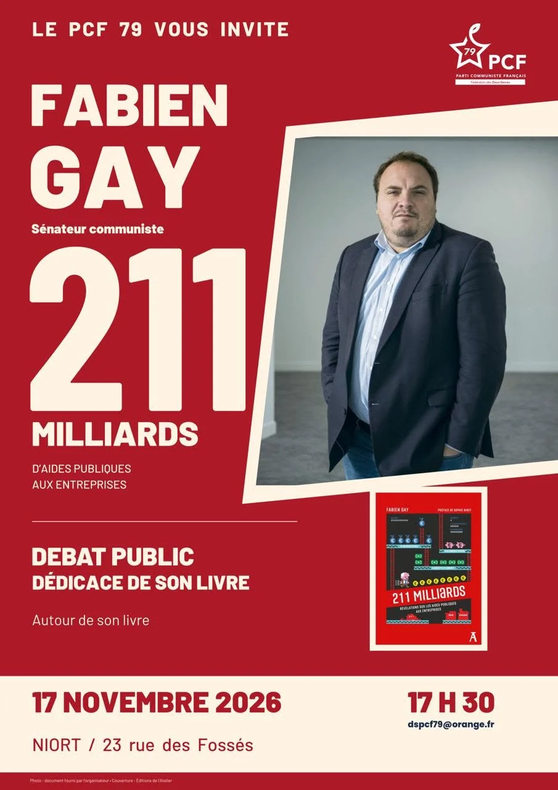

Publication du PCF 79
« Et si les 211 milliards d’aides publiques aux entreprises servaient d’abord l’emploi et les salaires ? »
Date indiquée par Facebook · 31 octobre 2026
Légende originale du PCF 79
Et si les 211 milliards d'aides publiques aux entreprises servaient d'abord l'emploi et les salaires ?
Débat et dédicace avec Fabien Gay, sénateur communiste.
📅 Mardi 17 novembre, 17 h 30
📍 23 rue des Fossés, Niort
Le PCF 79 vous y attend : venez nombreuses et nombreux ! ✊
Repères éditoriaux
Nous avions invité à en débattre avec Fabien Gay, sénateur communiste, le 17 novembre à Niort. L’annonce donne rendez-vous à 17 h 30 au 23 rue des Fossés.

Sources
PCF 79 · relevé Meta et fil Facebook · FB-1454574070189175
À lire aussi · Fabien Gay à Niort le 17 novembre. Notre invitation au débat et à la dédicace